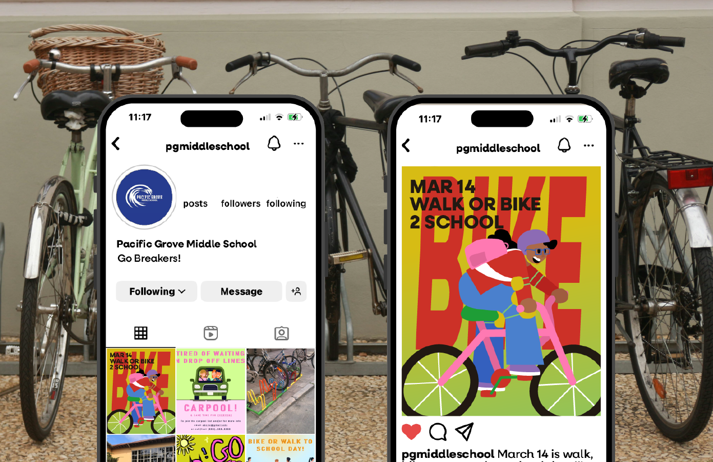
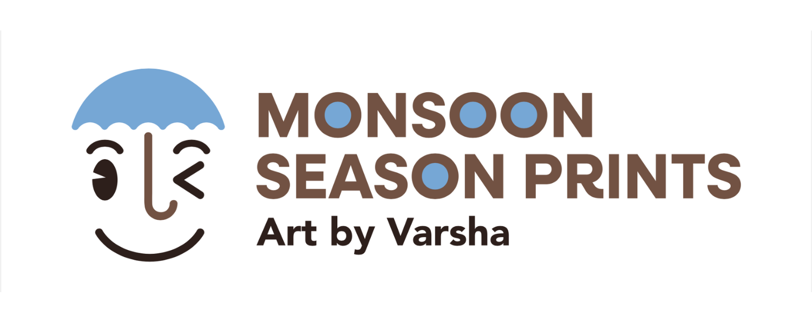

featured projects
Redesigning CSUMB
Building a visual brand for CSU Monterey Bay that highlight its values as an academic institution.
learn more

Design for Safety
Making school zones safer in partnership with Transportation Agency for Monterey County (TAMC).
learn more
Building Portfolios
Creating a teaching and research portfolio website for Professor Rumela Sen, from the ground up.
learn more
related experience

Branding and Web Designer
Social Media and Web Support Intern
